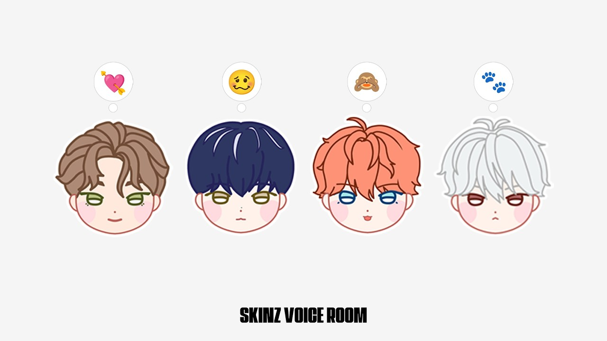
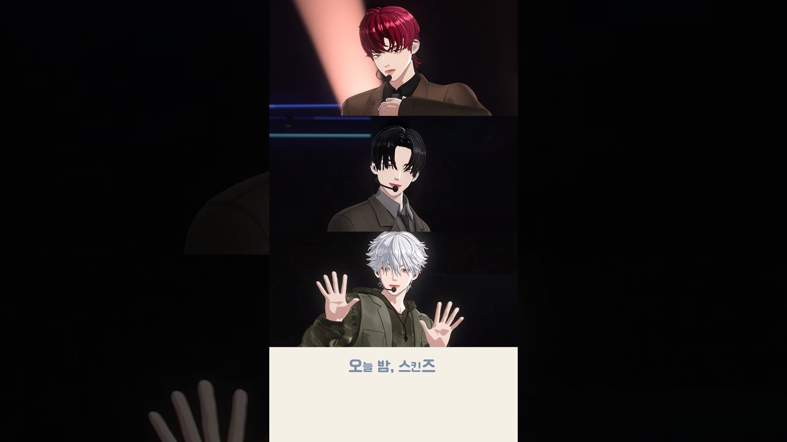

PODCAST ARCHIVE
Podcast
Voice only的地方
團體專欄
最新更新文章
全部文章
 KUTA 스스 的Space直播日期：2026-10-06WE GO-6 · WEGO-6 스스WE GO-6
KUTA 스스 的Space直播日期：2026-10-06WE GO-6 · WEGO-6 스스WE GO-6 時雨 스스 的Space直播日期：2026-10-05WE GO-6 · WEGO-6 스스WE GO-6時雨 스스 呦囉本~直播日期：2026-10-03WE GO-6 · WEGO-6 스스WE GO-6
時雨 스스 的Space直播日期：2026-10-05WE GO-6 · WEGO-6 스스WE GO-6時雨 스스 呦囉本~直播日期：2026-10-03WE GO-6 · WEGO-6 스스WE GO-6 羽然스스 風車直播日期：2026-10-02WE GO-6 · WEGO-6 스스WE GO-6Zero 스스 Zero的Space直播日期：2026-10-01WE GO-6 · WEGO-6 스스WE GO-6時雨 스스 5分鐘直播日期：2026-09-29WE GO-6 · WEGO-6 스스WE GO-6時雨 스스 我的維他命直播日期：2026-09-28WE GO-6 · WEGO-6 스스WE GO-6時雨 스스 呦囉本直播日期：2026-09-27WE GO-6 · WEGO-6 스스WE GO-6
羽然스스 風車直播日期：2026-10-02WE GO-6 · WEGO-6 스스WE GO-6Zero 스스 Zero的Space直播日期：2026-10-01WE GO-6 · WEGO-6 스스WE GO-6時雨 스스 5分鐘直播日期：2026-09-29WE GO-6 · WEGO-6 스스WE GO-6時雨 스스 我的維他命直播日期：2026-09-28WE GO-6 · WEGO-6 스스WE GO-6時雨 스스 呦囉本直播日期：2026-09-27WE GO-6 · WEGO-6 스스WE GO-6
SKINZ VOICE ROOM (W. THEO, JAON, YULL, ILANG KWON)直播日期：2026-03-24SKINZ · Voice RoomSKINZ SKINZ VOICE ROOM (W. DOVIN, DAEL, FINN, ILANG KWON)直播日期：2026-03-19SKINZ · Voice RoomSKINZ
SKINZ VOICE ROOM (W. DOVIN, DAEL, FINN, ILANG KWON)直播日期：2026-03-19SKINZ · Voice RoomSKINZ SKINZ VOICE ROOM (W. THEO, JAON, YULL)直播日期：2026-03-17SKINZ · Voice RoomSKINZ
SKINZ VOICE ROOM (W. THEO, JAON, YULL)直播日期：2026-03-17SKINZ · Voice RoomSKINZ
SKINZ The Way Back’單曲發行後 Voice Live直播日期：2025-05-11SKINZ · InstagramSKINZ SKINZ 人氣歌謠舞台後 Voice Live直播日期：2025-05-04SKINZ · InstagramSKINZ
SKINZ 人氣歌謠舞台後 Voice Live直播日期：2025-05-04SKINZ · InstagramSKINZ SKINZ SBS歌謠大戰東京巨蛋出道舞台後 首次 VOICE LIVE直播日期：2025-04-27SKINZ · InstagramSKINZ
SKINZ SBS歌謠大戰東京巨蛋出道舞台後 首次 VOICE LIVE直播日期：2025-04-27SKINZ · InstagramSKINZ目前沒有符合的影音紀錄。